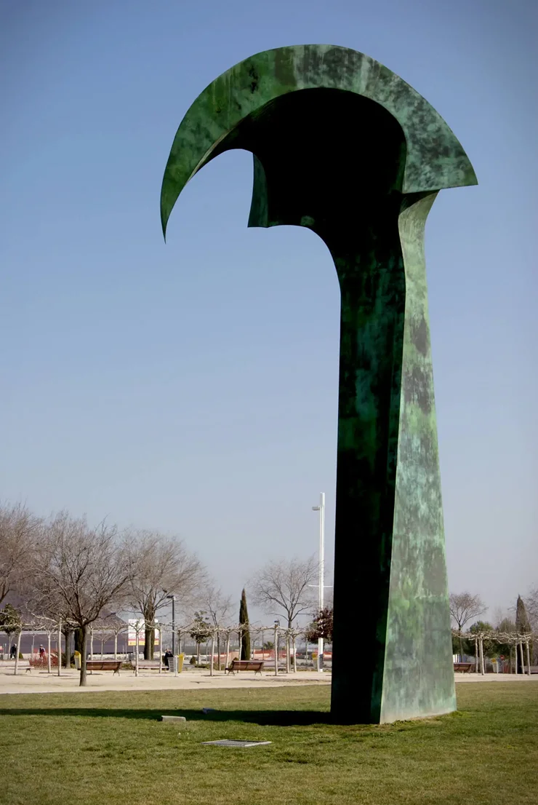
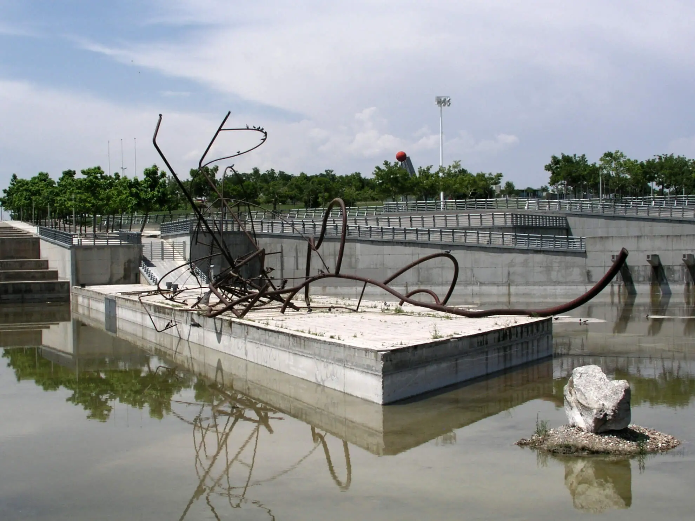
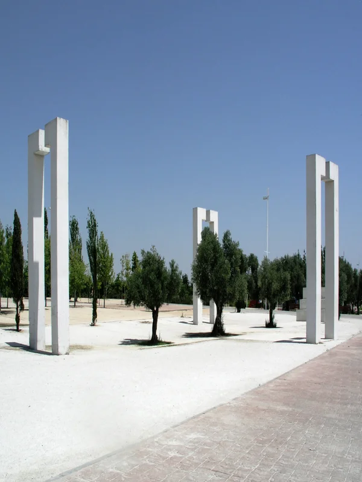

El parque Juan Carlos I, Ubicado en la zona de la Feria de Madrid, es un inmenso parque de una superficie de 160 hectáreas que alberga, entre otras cosas, un olivar con más de 2000 ejemplares del antiguo Olivar de Hinojosa, un lago, un auditorio, una colección de esculturas al aire libre y un centro de actividades.
Fue abierto al público en 1992 con motivo de la celebración de 'Madrid capital europea de la cultura'.
El parque es un espacio ideal para la realización de diferentes deportes. Cuenta con una gran pista de patinaje, un lago y una ría (en los que poder practicar deportes naúticos), carril bici y un servicio de alquiler de bicicletas gratuito…
Además, cada media hora, un trenecito recorre el parque de forma gratuita. Los fines de semana se organizan multitud de talleres para los más pequeños.
En la década de los años 1980 se proyectó que la zona fuera un espacio moderno orientado al turismo y a los congresos internacionales. La zona urbanizada vendría a bautizarse como Campo de las Naciones.En él se construyó elPalacio de Congresos Municipal que, a partir de 1988 estuvo a cargo de una empresa pública llamada Campo de las Naciones. En 2006 la empresa fue rebautizada como Madrid Espacios y Congresos S.A., con el nombre comercial de Madridec. Madridec terminó gestionando el Palacio de Congresos y el edificio Apot. Fuera de esa área, Madridec también gestionó el Recinto Ferial de la Casa de Campo y la Caja Mágica. No obstante, en 2013 Madridec quebró y todas sus deudas y activos pasaron a ser gestionadas directamente por el Ayuntamiento.
Junto al Campo de las Naciones se inauguró el 7 de mayo de 1992 el parque Juan Carlos I. Ese mismo año, Madrid era la Capital Europea de la Cultura. El parque está gestionado por el Área de Gobierno de Medio Ambiente del Ayuntamiento de Madrid. Ese mismo año tuvieron lugar las Olimpiadas de Barcelona y la Exposición Universal de Sevilla. Un año antes, en 1991, se había inaugurado el gran auditorio al aire libre del parque, con capacidad para 9500 personas. El 5 de mayo de 2014, la Asociación Cultural "Barajas, distrito BIC" solicitó a la Dirección General de Patrimonio Histórico de la Comunidad de Madrid que el parque fuera declarado Bien de Interés Cultural, en la categoría de "Paisaje Cultural".
Está emplazado en el área del antiguo Olivar de la Hinojosa, del que se han conservado una buena cantidad de olivos. Tras la transformación de la zona a finales de los años 80, se crea el complejo del Campo de las Naciones, con las instalaciones feriales del Ifema, el Palacio Municipal de Congresos y una zona de oficinas y hoteles. El parque fue levantado en la parte oriental del complejo. El parque está delimitado por la autovía M-40 al sur, la calle de Dublín al oeste, las instalaciones del Club de Golf Olivar de la Hinojosa al norte y la avenida de Logroño al este. Esta última calle lo separa del parque de El Capricho (ubicado en la Alameda de Osuna).
El parque tiene cinco entradas repartidas en distintos flancos. Está organizado alrededor de un anillo de un kilómetro de diámetro y cuarenta metros de anchura. En la parte externa del mismo, se encuentran las zonas de acceso, aparcamientos, el auditorio y áreas verdes. La parte interior del anillo alberga proyectos de jardinería, alguna plaza, los jardines de Las Tres Culturas (judía, árabe y cristiana), la estufa fría y una parte del canal acuático de casi dos kilómetros de longitud navegable en parte.
En el parque se encuentran distribuidas 19 esculturas abstractas de diferentes artistas de diversos países. Once esculturas fueron realizadas por escultores de prestigio internacional que participaron en el Simposio Internacional de Esculturas a Aire Libre, celebrado en el recinto del parque en 1992. Posteriormente han sido levantadas el resto de esculturas. El recorrido para visitar las esculturas es denominado "Senda de las Esculturas". Aquí mostramos las fotos de algunas.
Escultura que simboliza la paz y la armonía en el parque.
Escultura abstracta que representa encuentros culturales.
Escultura que invita a un paseo reflexivo entre dos árboles.
Esculturas modernistas de Dani Karavan.
Si pinchas sobre los puntos 4,5 o 6 de este mapa podrás ir a una página donde ver los jardines de las 3 culturas.
Si pinchas sobre el punto 8 podrás visualizar la tirolina.
Si pinchas sobre el punto 1 podrás ver el puente arco acero corten.
Precioso sendero del parque con bancos.